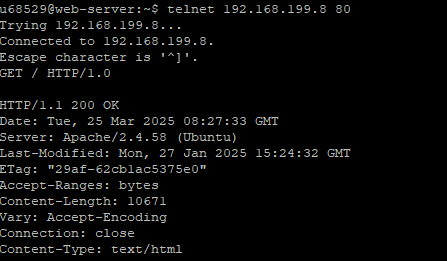

С помощью команды telnet 192.168.199.8 80 подключаемся к учебному серверу, предварительно подключившись через putty к kubsu-dev.ru

Отправляем GET запрос для получения главной страницы сайта
С помощью команды GET также получаем внутреннюю страницу сайта. Для этого указываем ее URI после GET/
и указываем значение заголовка Host: u68871.kubsu-dev.ru

С помощью FileZilla заливаем file.tr.gz в каталог задания на сервере

После этого, чтобы определить размер файла, не скачивая его, используем мeтод HEAD

На размер файла в байтах указывает значение заголовка Content-Length - в данном случае 11335
Определяем медиатип ресурса image.png так же с помощью метода HEAD, предварительно загрузив image.png на сервер через FileZilla


На медиатип указывает значение заголовка Content-Type - в данном случае image
Отправляем комментарий на сервер по адресу /index.php, предварительно загрузив index.php на сервер через FileZilla (убеждаемся в работоспособности index.php),
при помощи метода POST. Указываем заголовки Content-Type: application/x-www-form-urlencoded, и Content-Length: 30 для корректной передачи данных


Для того, чтобы получить первые 100 байт файла, создаем GET запрос и указываем заголовок Range: bytes=0-99

Определяем кодировку ресурса index.php благодаря отправке запроса HEAD. На формат кодировки указывает значение параметра charset заголовка Content-Type
В данном случае тип кодировки - is0-8859-1